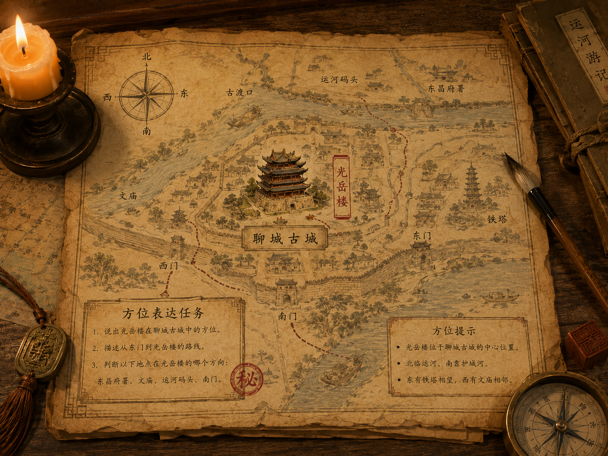
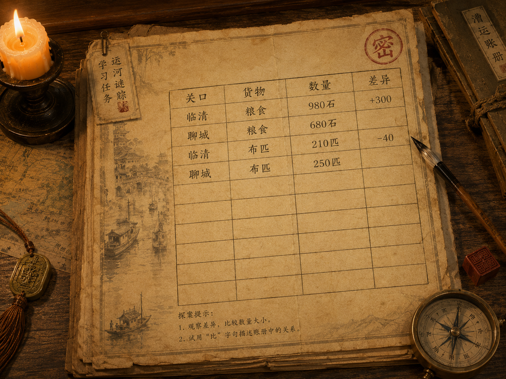
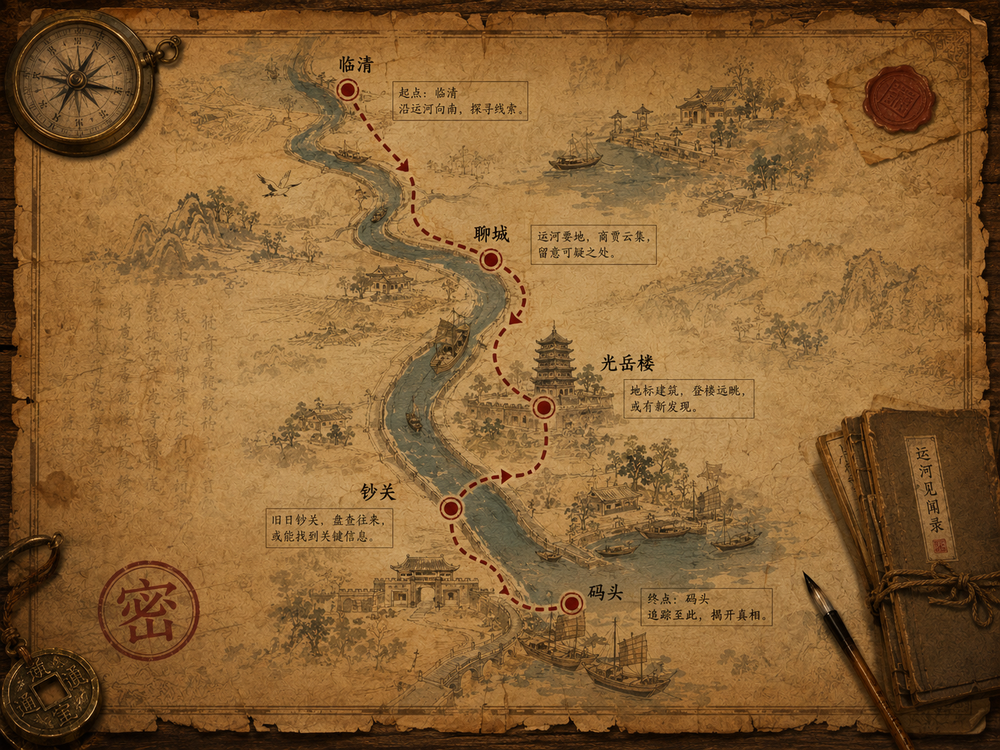

玩家需要根据前面获得的线索，完成方位表达、比较句、路线描述和情境对话四类汉语任务。 每完成一个任务，系统会点亮对应印章。全部完成后，即可进入预约体验页面。
掌握“在……的……方向”“比字句”“先……再……”和问路交流表达。
方位表达
比字句
路线描述
情境对话
当前已完成 0 / 4 个任务。

根据地图提示，选择正确的方位表达。
光岳楼位于聊城古城的什么位置？

根据账册记录，完成“比”字句。
请补全句子：临清关粮食 ____ 聊城关多三百石。

根据路线图，选择正确的顺序表达。
下面哪一句路线描述更合适？
你来到茶馆询问掌柜线索，请选择合适的表达。
如果你想问“山陕会馆怎么走？”，下面哪一句最合适？
你需要完成四个汉语任务，才能解锁最终体验入口。